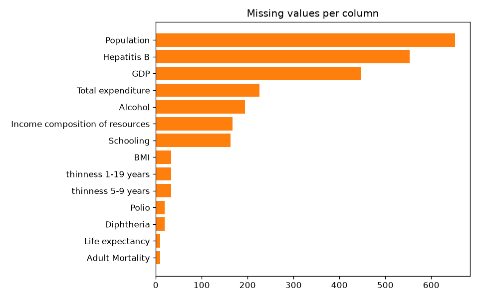
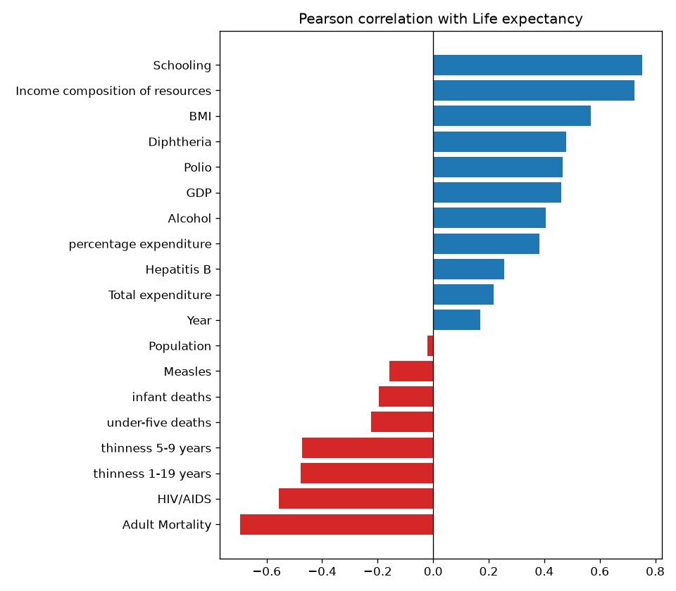
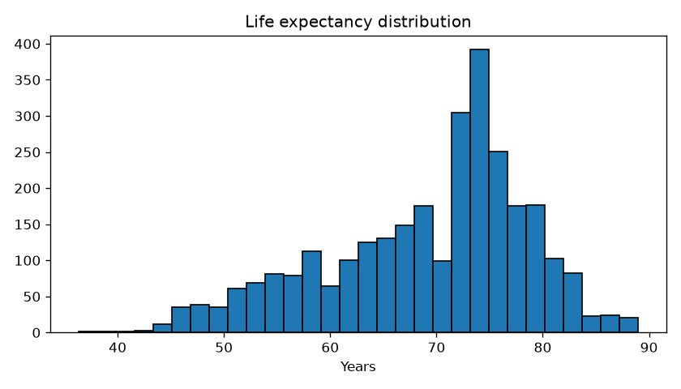
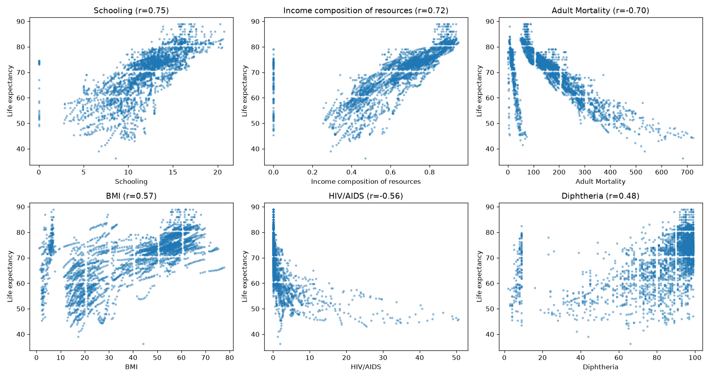
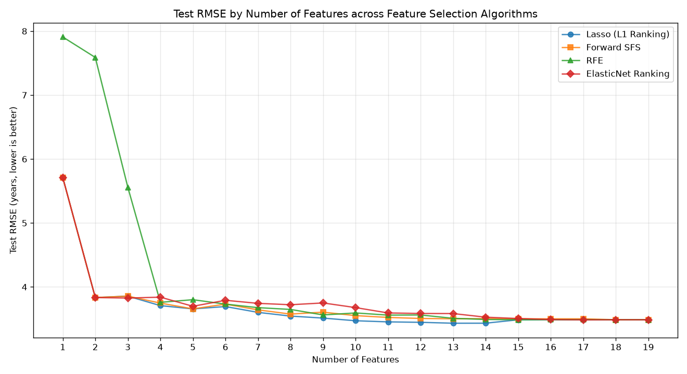
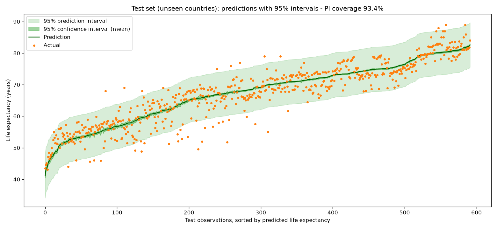
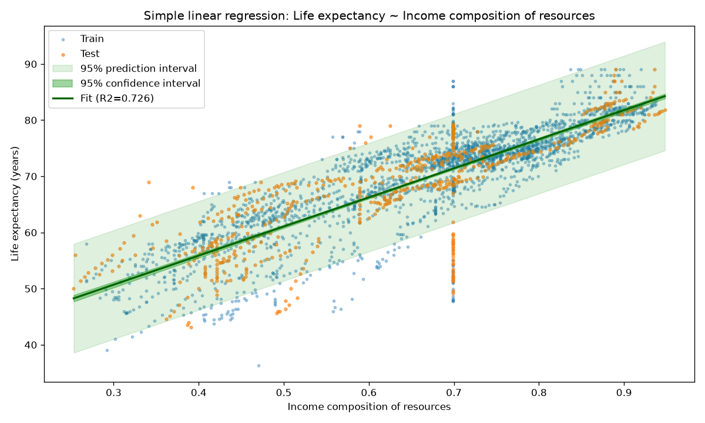
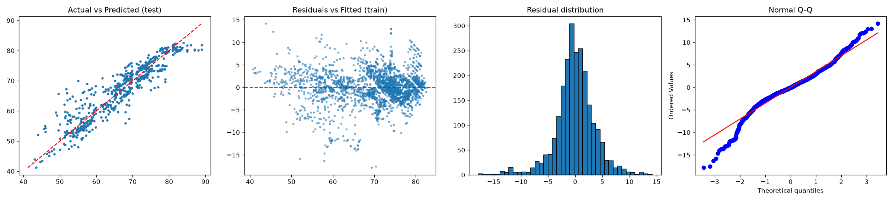

資料集：Kaggle「Life Expectancy (WHO)」（193 國、2000–2015 年、20 個候選特徵）
第二個資料集（互動探索器）：Kaggle「Predict the Flood」（Playground Series S4E5，20 個特徵）
作者：taemiyu 日期：2026-10-27
本報告以 Kaggle 的 WHO Life Expectancy 資料集（2,938 列、22 欄），依 CRISP-DM 六階段建立多元線性迴歸模型預測各國平均壽命。資料準備階段處理了大量缺值與不合理值（刪除 48% 錯誤的 BMI 欄、偏態變數取 log、同國中位數補值），並依國家切分訓練／測試集，避免同一國家的不同年份洩漏答案。以 Lasso、Forward SFS、RFE、ElasticNet 四種演算法搭配依國家分組的交叉驗證進行特徵選擇，依 1-SD 精簡原則選出 4 個特徵：Income composition of resources、log HIV/AIDS、Adult Mortality、Diphtheria。最終模型在 37 個模型沒看過的國家上達到 R² 0.850、RMSE 3.75 歲，95% 預測區間涵蓋 93.4% 的實際值，三項成功標準全部通過。此外，互動探索器加入第二個特徵數大於 13 的 Kaggle 資料集「Predict the Flood」（20 個特徵），全部特徵的 OLS 在測試集達到 R² 0.842（見 2.2 節）。
來源：https://www.kaggle.com/datasets/kumarajarshi/life-expectancy-who（Kaggle，作者 KumarRajarshi；原始資料來自 WHO Global Health Observatory 與聯合國）。每列為一個國家在一個年份的資料，預測目標為平均壽命（Life expectancy，歲）。候選特徵共 20 個（不含國家名稱與目標），符合作業「特徵數大於 13」的要求：
| 特徵 | 說明 | 與壽命的相關係數 |
|---|---|---|
| Year | 年份（2000–2015） | +0.170 |
| Status | 已開發／開發中國家 | — |
| Adult Mortality | 成人死亡率：15–60 歲每千人死亡機率 | -0.696 |
| infant deaths | 每千人嬰兒死亡數 | -0.197 |
| Alcohol | 15 歲以上人均酒精消費（公升） | +0.405 |
| percentage expenditure | 健康支出占人均 GDP 的百分比 | +0.382 |
| Hepatitis B | 1 歲兒童 B 型肝炎疫苗覆蓋率（%） | +0.257 |
| Measles | 每千人麻疹通報病例 | -0.158 |
| BMI | 國民平均 BMI | +0.568 |
| under-five deaths | 每千人五歲以下死亡數 | -0.223 |
| Polio | 1 歲兒童小兒麻痺疫苗覆蓋率（%） | +0.466 |
| Total expenditure | 政府健康支出占政府總支出（%） | +0.218 |
| Diphtheria | 1 歲兒童白喉（DTP3）疫苗覆蓋率（%） | +0.479 |
| HIV/AIDS | 每千名活產 0–4 歲 HIV/AIDS 死亡數 | -0.557 |
| GDP | 人均 GDP（美元） | +0.461 |
| Population | 人口數 | -0.022 |
| thinness 1-19 years | 10–19 歲過瘦盛行率（%） | -0.477 |
| thinness 5-9 years | 5–9 歲過瘦盛行率（%） | -0.472 |
| Income composition of resources | 人類發展指數中的收入組成（0–1） | +0.725 |
| Schooling | 平均受教育年數 | +0.752 |
來源：https://www.kaggle.com/competitions/playground-series-s4e5（Kaggle Playground Series Season 4 Episode 5，2024；以 Flood Prediction Factors 資料集為基礎產生的合成資料）。目標為洪水發生機率（FloodProbability，平均 0.505、標準差 0.050），候選特徵 20 個，同樣符合「特徵數大於 13」：
MonsoonIntensity、TopographyDrainage、RiverManagement、Deforestation、Urbanization、ClimateChange、DamsQuality、Siltation、AgriculturalPractices、Encroachments、IneffectiveDisasterPreparedness、DrainageSystems、CoastalVulnerability、Landslides、Watersheds、DeterioratingInfrastructure、PopulationScore、WetlandLoss、InadequatePlanning、PoliticalFactors
原始訓練資料有 1,117,957 列，超過瀏覽器端計算的上限，因此以隨機種子 42 抽樣 5,000 列（datasets/flood.csv），抽樣後目標的平均與標準差和原始資料一致。資料沒有缺值，各特徵都是 0–16 的整數評分，不需要額外清理。
| 項目 | 結果 |
|---|---|
| 切分 | 隨機 80/20（種子 42）：訓練 4,000 列、測試 1,000 列 |
| 模型 | OLS，全部 20 個特徵 |
| 測試集 R² | 0.8421 |
| 測試集 RMSE | 0.0206 |
| 5-fold CV R² | 0.8323 ± 0.011 |
| 95% 預測區間涵蓋率 | 94.6%（平均約 ±0.040） |
上表為 Python（statsmodels）重算的結果，與探索器一致（探索器測試集 R² 0.844、5-fold CV R² 0.830）。20 個特徵的係數都為正且大小相近（0.0052–0.0059），全部 p < .001，因此特徵選擇的 1-SD 原則會保留全部 20 個特徵：少用任何一個因子，誤差都會變大。這和 WHO 資料集「少數特徵就足夠」的結果形成對比。在探索器切換到這個資料集，可以看到特徵選擇比較、係數表，以及含信賴區間與預測區間的預測圖。
商業目標：協助衛生政策分析者，從各國的健康、經濟與社會指標估計平均壽命，並找出最關鍵的指標。
商業問題：（1）哪些指標與平均壽命最相關？（2）對「沒看過的國家」能預測多準？（3）單一預測的不確定性有多大？
資料探勘目標：建立可解釋的多元線性迴歸模型 Life expectancy = f(指標)，並以未見過的國家評估。
成功標準（建模前訂定）：測試集 R² ≥ 0.8、測試集 RMSE ≤ 4.5 歲、分組 5-fold CV R² ≥ 0.75。
現況評估：資源為一份公開資料集與 Python（scikit-learn、statsmodels）；模型須可解釋；主要風險為缺值多、不合理數值、以及同一國家重複出現造成的資料洩漏。
14 個欄位有缺值，1,289 列（44%）至少缺一個值，因此不能直接刪除有缺值的列。與平均壽命相關最強的是受教育年數（r = +0.75）、收入組成指數（+0.72）與成人死亡率（-0.70）。




| 問題 | 筆數 | 比例 | 處理 |
|---|---|---|---|
| 國家平均 BMI 低於 10 或高於 50 | 1,422 | 48.4% | 刪除 BMI 欄 |
| 教育年數 = 0 | 28 | 1.0% | 視為缺值後補值 |
| 收入組成指數 = 0 | 130 | 4.4% | 視為缺值後補值 |
| 健康支出比例 = 0 | 611 | 20.8% | 視為缺值後補值 |
| 平均壽命（目標）缺值 | 10 | 0.3% | 刪除該列 |
| 變數 | 偏態（前） | 偏態（後） |
|---|---|---|
| Population | 15.92 | -0.55 |
| infant deaths | 9.79 | 0.70 |
| under-five deaths | 9.50 | 0.64 |
| Measles | 9.44 | 0.55 |
| HIV/AIDS | 5.40 | 2.12 |
| percentage expenditure | 4.65 | 0.06 |
| GDP | 3.21 | -0.14 |
嬰兒死亡數與五歲以下死亡數幾乎是同一件事，VIF 超過 190；特徵選擇會只留下其中之一。
| 特徵 | VIF |
|---|---|
| log under-five deaths | 203.76（嚴重共線） |
| log infant deaths | 193.64（嚴重共線） |
| Income composition of resources | 10.92（嚴重共線） |
| log percentage expenditure | 7.89 |
| log GDP | 7.76 |
| thinness 5-9 years | 7.73 |
| thinness 1-19 years | 7.64 |
| Schooling | 7.41 |
| Diphtheria | 2.42 |
| log HIV/AIDS | 2.31 |
| Polio | 2.23 |
| Alcohol | 1.90 |
| Adult Mortality | 1.89 |
| log Measles | 1.82 |
| Status_Developing | 1.79 |
| Hepatitis B | 1.61 |
| log Population | 1.28 |
| Total expenditure | 1.27 |
| Year | 1.13 |
四種演算法（Lasso 路徑、Forward SFS、RFE、ElasticNet 路徑）各自只看訓練集，以依國家分組的 5-fold CV RMSE 比較 k = 1 到 19 個特徵。19 個特徵的窮舉搜尋需 524,287 種組合，計算量過大，因此略過。CV RMSE 最低的是 Forward SFS k = 11（3.503 ± 0.188 歲）；依 1-SD 精簡原則（CV RMSE 落在最佳值一個標準差內、特徵最少），選出 Forward SFS，k = 4。

| 演算法 | k（CV 最佳） | k（1-SD） | 選出的特徵 | CV RMSE | Test RMSE | Test R² |
|---|---|---|---|---|---|---|
| Lasso (L1 Ranking) | 10 | 4 | Income composition of resources, log HIV/AIDS, Adult Mortality, log under-five deaths | 3.669 | 3.708 | 0.8528 |
| Forward SFS | 11 | 4 | Income composition of resources, log HIV/AIDS, Adult Mortality, Diphtheria | 3.662 | 3.748 | 0.8497 |
| RFE | 11 | 5 | log under-five deaths, log infant deaths, Income composition of resources, log HIV/AIDS, Adult Mortality | 3.644 | 3.801 | 0.8454 |
| ElasticNet Ranking | 15 | 4 | Income composition of resources, log HIV/AIDS, Schooling, Adult Mortality | 3.759 | 3.840 | 0.8421 |
| 模型 | 特徵數 | Test R² | RMSE | MAE | MAPE | 分組 CV R² |
|---|---|---|---|---|---|---|
| OLS (all features) | 19 | 0.8699 | 3.487 | 2.675 | 4.13% | 0.8464 ± 0.021 |
| OLS (selected 4) | 4 | 0.8497 | 3.748 | 2.815 | 4.41% | 0.8422 ± 0.020 |
| Ridge (all, CV alpha) | 19 | 0.8703 | 3.482 | 2.671 | 4.13% | — |
| Lasso (all, CV alpha) | 19 | 0.8681 | 3.510 | 2.662 | 4.12% | — |
Ridge 與 Lasso 以分組交叉驗證挑選正則化強度，表現與全部特徵的 OLS 相近；精簡模型只用 4 個特徵，誤差只多約 0.26 歲，但更容易解釋。
Life expectancy = 49.082 + 32.6493 × Income composition of resources − 3.3603 × log HIV/AIDS − 0.0165 × Adult Mortality + 0.0380 × Diphtheria
| 變數 | 係數 | SE | p | 95% CI | 叢集穩健 SE | 叢集穩健 p | 標準化 β |
|---|---|---|---|---|---|---|---|
| Intercept | 49.0816 | 0.5149 | < .001 | [48.072, 50.091] | 1.6223 | < .001 | — |
| Income composition of resources | 32.6493 | 0.6459 | < .001 | [31.383, 33.916] | 2.3721 | < .001 | 0.537 |
| log HIV/AIDS | -3.3603 | 0.1412 | < .001 | [-3.637, -3.084] | 0.3613 | < .001 | -0.264 |
| Adult Mortality | -0.0165 | 0.0008 | < .001 | [-0.018, -0.015] | 0.0030 | < .001 | -0.216 |
| Diphtheria | 0.0380 | 0.0035 | < .001 | [0.031, 0.045] | 0.0128 | .003 | 0.095 |
訓練集 n = 2336，R² = 0.8551，調整後 R² = 0.8548，F = 3,437.76（p < .001）。因同一國家內的誤差相關，推論以依國家分群的叢集穩健標準誤為準；四個係數仍全部顯著。
在 37 個沒看過的國家上：R² 0.8497、RMSE 3.75 歲、MAE 2.82 歲、MAPE 4.41%；只猜平均的基準 RMSE 為 9.95 歲。分組 CV R² 為 0.842 ± 0.020。
| 成功標準 | 結果 | 判定 |
|---|---|---|
| 測試集 R² ≥ 0.8 | 0.8497 | 通過 |
| 測試集 RMSE ≤ 4.5 歲 | 3.75 歲 | 通過 |
| 分組 CV R² ≥ 0.75 | 0.8422 | 通過 |



| 假設 | 統計量 | p 值 | 結果 |
|---|---|---|---|
| 線性（Ramsey RESET） | 29.454 | < .001 | 未通過 |
| 同質變異（Breusch-Pagan） | 119.750 | < .001 | 未通過 |
| 殘差常態（Jarque-Bera） | 758.008 | < .001 | 未通過 |
| 誤差獨立（Durbin-Watson） | 0.565 | — | 未通過 |
| 無共線性（最大 VIF） | 1.981 | — | 通過 |
| 影響點（Cook's D > 4/n 筆數） | 174 | — | 參考 |
真實的跨國資料很難完全符合 OLS 假設：殘差有異質變異與非常態，且同一國家內的誤差高度相關（Durbin-Watson 0.56）。因此係數推論改用叢集穩健標準誤，並將非線性項與混合效果模型列為後續改進方向。最終特徵的最大 VIF 為 1.98，沒有共線性問題。
通過評估後，以全部資料重新擬合最終模型並用 joblib 儲存（crispdm_output/life_expectancy_model.joblib）。predict_life_expectancy() 接受原始欄位，套用相同的清理、log 轉換與補值，回傳預測值、95% 信賴區間與預測區間。成果另部署為網站（報告與互動探索器）。
| 國家（2014） | 實際 | 預測 | 95% 預測區間 |
|---|---|---|---|
| Azerbaijan | 72.5 | 74.9 | 67.8 – 82.0 |
| Belgium | 89.0 | 80.0 | 73.0 – 87.1 |
| Belize | 70.0 | 72.3 | 65.2 – 79.4 |
Belgium 2014 年的實際值 89.0 歲明顯偏高（比利時實際約 81 歲），是原始資料的錯誤；模型預測約 80 歲反而合理，再次說明資料品質檢查的重要。
監控計畫：新年度資料公布時重新預測並比對；每年重新訓練，或滾動 RMSE 超過 5 歲時立即重訓；輸入超出訓練範圍時警示；定期檢查預測區間涵蓋率是否維持約 95%。
依作業規定標示：以下列出本專案中由生成式 AI 工具協助完成的部分；與 AI 的完整對話紀錄另以 PDF 繳交。
使用的 AI 工具：
AI 協助的部分：資料集挑選建議、資料清理與補值策略、CRISP-DM 程式（main.py、feature_progression_analysis.py）、瀏覽器端統計引擎與特徵選擇演算法、網頁版面與圖表、報告文字草稿。
本人負責與確認的部分：
驗證方式：網頁計算結果已與 Python（statsmodels、scikit-learn）逐項比對一致。
使用 NotebookLM 研究網路上同主題（WHO Life Expectancy 迴歸分析）的解法後產生的摘要：
資料清理多採用插值法填補缺漏值、縮尾處理（Winsorization）極端值，並校正數據末端零被截斷的錯誤。核心預測因子包含成人死亡率、受教育年數、HIV/AIDS 死亡率、資源收入組成（HDI）及疫苗覆蓋率。使用模型涵蓋多元線性迴歸、Ridge 與 Lasso 正則化模型及隨機森林；其中隨機森林與二次多項式迴歸評估結果最佳（R² 達 0.92 以上）。常見限制則為原始資料缺漏率高、變數間存在高度共線性，以及未納入環境污染等潛在因子。